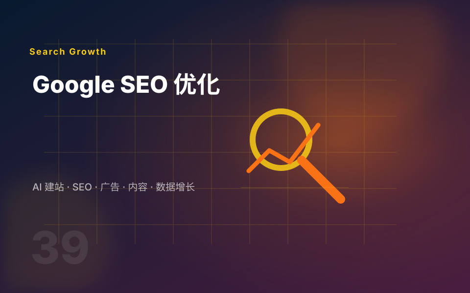

关键词与搜索意图
先判断买家在 Google 上真正搜索什么，是找供应商、比较方案、查参数，还是准备采购。
Backlinko 的 SEO 指南强调：SEO 需要同时处理技术 SEO、On-page SEO、关键词研究、内容优化和链接建设。对外贸网站来说，这些动作最终都要服务于询盘质量。
先判断买家在 Google 上真正搜索什么，是找供应商、比较方案、查参数，还是准备采购。
优化标题、描述、H1-H6、正文结构、图片 alt、内部链接和 CTA，让页面同时服务搜索引擎和用户。
处理抓取、索引、速度、移动端体验、重复内容、站点地图、结构化数据和 Core Web Vitals。
通过行业内容、资源页、项目经验、合作伙伴和高质量引用建立网站可信度，而不是追求低质量链接数量。

SEO 不能保证某个关键词一定第几名，但可以把影响自然流量和询盘转化的关键问题逐项修复，并让后续内容增长有方向。
整理网站当前的收录、结构、速度、标题、内容、内链和转化问题，区分优先级。
输出关键词分组、页面地图和内容主题，避免所有关键词都挤在首页。
为产品页、分类页、博客、项目经验和 FAQ 制定标题、结构、内容模块和 CTA 模板。
针对速度、索引、重复内容、移动端、站点地图、结构化数据给出可执行调整项。
围绕核心产品和买家问题规划一批可持续发布的文章、指南、对比和 FAQ。
跟踪自然流量、排名变化、询盘入口和转化页面，决定下一轮优化重点。
如果你的网站只是临时展示页，SEO 不一定是第一优先级；如果你想长期获得自然询盘，就应该尽早把 SEO 结构规划进去。
B2B 工厂、机械设备、工业零部件、家居建材、医疗器械、新能源等有稳定搜索需求的行业。
产品方向还没确定、页面资料严重不足、只想短期测试广告的项目，可以先做建站和基础追踪。
新站最适合把关键词、栏目、URL、内链和内容模板提前规划，避免上线后大改结构。
本页方法论参考 Backlinko 对 SEO、On-page SEO、Technical SEO 和 SEO Checklist 的公开指南，并转化为外贸网站服务交付语言。
这些内容适合接在 SEO 服务说明后面，帮助客户理解收录、流量来源、关键词表现和 B2B 平台流量之间的关系。
把网站链接、目标市场和核心产品发给我，我会帮你判断先修技术问题、先改页面，还是先做内容集群。